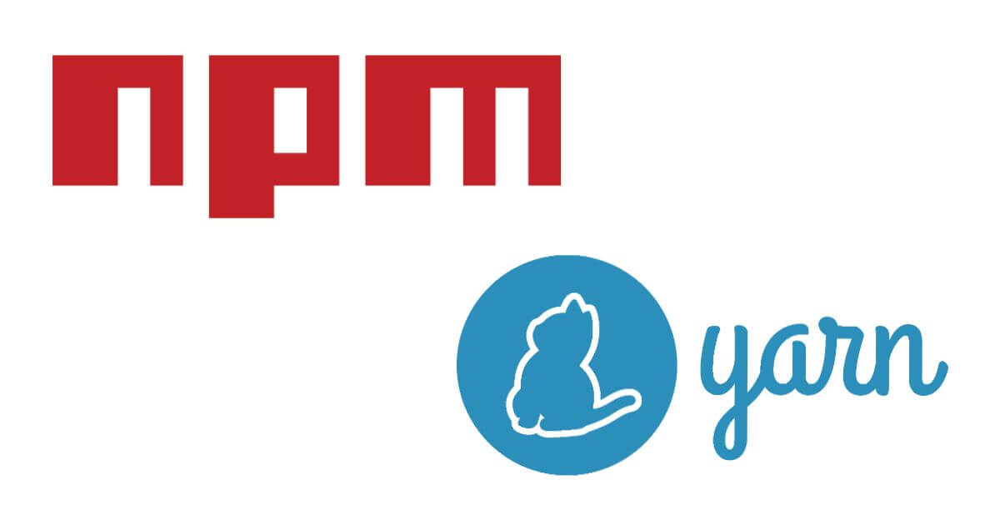

<!DOCTYPE html><html><head><meta charset="utf-8"><title>npm / Yarn 套件管理器指令比對 cheatsheet | Titangene Blog</title><meta http-equiv="X-UA-Compatible" content="IE=edge"><meta name="viewport" content="width=device-width,initial-scale=1,maximum-scale=1"><meta name="HandheldFriendly" content="True"><meta name="apple-mobile-web-app-capable" content="yes"><meta name="author" content="Titangene"><link rel="shortcut icon" href="/favicon.ico"><link rel="alternate" href="/atom.xml" title="Titangene Blog"><meta name="description" content="npm 或 Yarn 都是最常見的 Node.js 套件管理器。本篇紀錄兩個 CLI 對應的指令。"><meta property="og:type" content="article"><meta property="og:title" content="npm &#x2F; Yarn 套件管理器指令比對 cheatsheet"><meta property="og:url" content="https://titangene.github.io/article/npm-and-yarn-cheatsheet.html"><meta property="og:site_name" content="Titangene Blog"><meta property="og:description" content="npm 或 Yarn 都是最常見的 Node.js 套件管理器。本篇紀錄兩個 CLI 對應的指令。"><meta property="og:locale" content="zh_TW"><meta property="og:image" content="https://titangene.github.io/images/cover/npm_yarn.jpg"><meta property="article:published_time" content="2020-04-26T11:36:11.000Z"><meta property="article:modified_time" content="2020-05-03T14:05:17.677Z"><meta property="article:author" content="Titangene"><meta property="article:tag" content="w3HexSchool"><meta property="article:tag" content="version manager"><meta property="article:tag" content="JavaScript"><meta property="article:tag" content="Node.js"><meta property="article:tag" content="CLI"><meta property="article:tag" content="npm"><meta property="article:tag" content="Yarn"><meta name="twitter:card" content="summary_large_image"><meta name="twitter:image" content="https://titangene.github.io/images/cover/npm_yarn.jpg"><meta name="twitter:creator" content="@titangeneTW"><meta name="twitter:site" content="@titangene_blog"><meta property="fb:admins" content="100001106016019"><meta property="fb:app_id" content="2470546159839111"><meta property="og:image:width" content="1200"><meta property="og:image:height" content="630"><meta name="google-site-verification" content="AaJ39L7h-nWwJjXJMhAMtXSF6H6BUgGWXC80kYvLic8"><link rel="stylesheet" href="//fonts.googleapis.com/css?family=Inconsolata|Titillium+Web"><link href="https://fonts.googleapis.com/css?family=Source+Code+Pro&display=swap" rel="stylesheet"><link rel="stylesheet" href="//use.fontawesome.com/releases/v5.7.0/css/all.css" integrity="sha384-lZN37f5QGtY3VHgisS14W3ExzMWZxybE1SJSEsQp9S+oqd12jhcu+A56Ebc1zFSJ" crossorigin="anonymous"><link rel="stylesheet" href="https://unpkg.com/gitalk/dist/gitalk.css"><link rel="stylesheet" href="/style.css"><script async src="https://www.googletagmanager.com/gtag/js?id=UA-129758206-1"></script><script>!function(a){function n(){dataLayer.push(arguments)}a.dataLayer=a.dataLayer||[],n("js",new Date),n("config","UA-129758206-1")}(window)</script><script>function setLoadingBarProgress(e){document.getElementById("loading-bar").style.width=e+"%"}</script><meta name="generator" content="Hexo 4.2.0"><link rel="alternate" href="/atom.xml" title="Titangene Blog" type="application/atom+xml"></head></html><body><div id="loading-bar-wrapper"><div id="loading-bar"></div></div><script>setLoadingBarProgress(20)</script><header class="l_header"><div class="wrapper"><div class="nav-main container container--flex"><a class="logo flat-box" href="/">Titangene Blog</a><div class="menu"><ul class="h-list"><li><a class="flat-box nav-home" href="/">Home</a></li><li><a class="flat-box nav-archives" href="/archives">Archives</a></li></ul><div class="underline"></div></div><div class="m_search"><form name="searchform" class="form u-search-form"><input type="text" class="input u-search-input" placeholder="Search"> <i class="fas fa-search"></i></form></div><ul class="switcher h-list"><li class="s-search"><a class="fas fa-search" href="javascript:void(0)"></a></li><li class="s-menu"><a class="fas fa-bars" href="javascript:void(0)"></a></li></ul></div><div class="nav-sub container container--flex"><a class="logo flat-box" href="/">Titangene Blog</a><ul class="switcher h-list"><li class="s-comment"><a class="far fa-comment-alt" href="javascript:void(0)"></a></li><li class="s-top"><a class="fas fa-arrow-up" href="javascript:void(0)"></a></li><li class="s-toc"><a class="fas fa-list-ol" href="javascript:void(0)"></a></li></ul></div></div></header><aside class="menu-phone"><nav><a href="/" class="nav-home nav">Home </a><a href="/archives" class="nav-archives nav">Archives</a></nav></aside><script>setLoadingBarProgress(40)</script><div class="l_body"><div class="container clearfix"><div class="l_main"><article id="post-npm-and-yarn-cheatsheet" class="post white-box article-type-post" itemscope itemprop="blogPost"><section class="meta"><h2 class="title"><a href="/article/npm-and-yarn-cheatsheet.html">npm / Yarn 套件管理器指令比對 cheatsheet</a></h2><span class="post-time"><span class="post-meta-item-icon"><i class="fa fa-calendar"></i> </span><span class="post-meta-item-text">發表於</span> <time title="建立時間：2020-04-26 19:36:11" itemprop="dateCreated datePublished" datetime="2020-04-26T19:36:11+08:00">2020-04-26 </time><span class="post-meta-divider">|</span> <span class="post-meta-item-icon"><i class="fa fa-calendar-check"></i> </span><span class="post-meta-item-text">更新於</span> <time title="修改時間：2020-05-03 22:05:17" itemprop="dateModified" datetime="2020-05-03T22:05:17+08:00">2020-05-03</time></span> <span class="comments-count"><span class="post-meta-divider">|</span> <span class="post-meta-item-icon"><i class="fas fa-comment"></i> </span><a href="https://titangene.github.io/article/npm-and-yarn-cheatsheet.html#comments" class="article-comment-count">留言</a></span><div class="post-category"><span class="post-meta-item-icon"><i class="fa fa-folder"></i> </span><span class="post-meta-item-text">分類於</span> <span itemprop="about" itemscope itemtype="http://schema.org/Thing"><a href="/categories/web-dev/" itemprop="url" rel="index"><span itemprop="name">Web Dev</span></a></span></div></section><section class="toc-wrapper"><h3>目錄</h3><ol class="toc"><li class="toc-item toc-level-2"><a class="toc-link" href="#建立新專案"><span class="toc-text">建立新專案</span></a></li><li class="toc-item toc-level-2"><a class="toc-link" href="#安裝專案-package-json-中的所有相依套件"><span class="toc-text">安裝專案 package.json 中的所有相依套件</span></a></li><li class="toc-item toc-level-2"><a class="toc-link" href="#安裝相依套件"><span class="toc-text">安裝相依套件</span></a><ol class="toc-child"><li class="toc-item toc-level-3"><a class="toc-link" href="#新增至不同類型的-dependencies"><span class="toc-text">新增至不同類型的 dependencies</span></a></li><li class="toc-item toc-level-3"><a class="toc-link" href="#安裝指定版本"><span class="toc-text">安裝指定版本</span></a></li><li class="toc-item toc-level-3"><a class="toc-link" href="#安裝次版號的最新版"><span class="toc-text">安裝次版號的最新版</span></a></li><li class="toc-item toc-level-3"><a class="toc-link" href="#在全域安裝套件"><span class="toc-text">在全域安裝套件</span></a></li></ol></li><li class="toc-item toc-level-2"><a class="toc-link" href="#升級相依套件"><span class="toc-text">升級相依套件</span></a><ol class="toc-child"><li class="toc-item toc-level-3"><a class="toc-link" href="#升級至最新版"><span class="toc-text">升級至最新版</span></a></li></ol></li><li class="toc-item toc-level-2"><a class="toc-link" href="#升級相依套件可選擇是否升級"><span class="toc-text">升級相依套件可選擇是否升級</span></a></li><li class="toc-item toc-level-2"><a class="toc-link" href="#刪除套件"><span class="toc-text">刪除套件</span></a></li><li class="toc-item toc-level-2"><a class="toc-link" href="#列出已安裝的套件"><span class="toc-text">列出已安裝的套件</span></a></li></ol></section><section class="article typo"><div class="article-entry" itemprop="articleBody"><p></p><p>npm 或 Yarn 都是最常見的 Node.js 套件管理器。本篇紀錄兩個 CLI 對應的指令。</p><a id="more"></a><h2 id="建立新專案"><a class="header-anchor" href="#建立新專案"></a>建立新專案</h2><figure class="highlight shell"><table><tr><td class="gutter"><pre><span class="line">1</span><br><span class="line">2</span><br></pre></td><td class="code"><pre><code class="hljs shell"><span class="hljs-meta">$</span><span class="bash"> npm init</span><br><span class="hljs-meta">$</span><span class="bash"> npm init -y</span><br></code></pre></td></tr></table></figure><figure class="highlight shell"><table><tr><td class="gutter"><pre><span class="line">1</span><br><span class="line">2</span><br></pre></td><td class="code"><pre><code class="hljs shell"><span class="hljs-meta">$</span><span class="bash"> yarn init</span><br><span class="hljs-meta">$</span><span class="bash"> yarn init -y</span><br></code></pre></td></tr></table></figure><h2 id="安裝專案-package-json-中的所有相依套件"><a class="header-anchor" href="#安裝專案-package-json-中的所有相依套件"></a>安裝專案 <code>package.json</code> 中的所有相依套件</h2><figure class="highlight shell"><table><tr><td class="gutter"><pre><span class="line">1</span><br><span class="line">2</span><br></pre></td><td class="code"><pre><code class="hljs shell"><span class="hljs-meta">$</span><span class="bash"> yarn</span><br><span class="hljs-meta">$</span><span class="bash"> yarn install</span><br></code></pre></td></tr></table></figure><figure class="highlight shell"><table><tr><td class="gutter"><pre><span class="line">1</span><br><span class="line">2</span><br></pre></td><td class="code"><pre><code class="hljs shell"><span class="hljs-meta">$</span><span class="bash"> npm install</span><br><span class="hljs-meta">$</span><span class="bash"> npm i</span><br></code></pre></td></tr></table></figure><h2 id="安裝相依套件"><a class="header-anchor" href="#安裝相依套件"></a>安裝相依套件</h2><p>安裝相依套件，並將套件新增至不同類型的 <code>dependencies</code>：</p><figure class="highlight shell"><table><tr><td class="gutter"><pre><span class="line">1</span><br><span class="line">2</span><br></pre></td><td class="code"><pre><code class="hljs shell"><span class="hljs-meta">$</span><span class="bash"> npm i &lt;package&gt;</span><br><span class="hljs-meta">$</span><span class="bash"> npm install &lt;package&gt;</span><br></code></pre></td></tr></table></figure><figure class="highlight shell"><table><tr><td class="gutter"><pre><span class="line">1</span><br><span class="line">2</span><br><span class="line">3</span><br></pre></td><td class="code"><pre><code class="hljs shell"><span class="hljs-meta">$</span><span class="bash"> yarn add &lt;package&gt;</span><br><span class="hljs-meta">$</span><span class="bash"> yarn add &lt;package&gt;@&lt;version&gt;</span><br><span class="hljs-meta">$</span><span class="bash"> yarn add &lt;package&gt;@&lt;tag&gt;</span><br></code></pre></td></tr></table></figure><p>安裝套件並將此套件儲存至 <code>package.json</code> 中的 <code>dependencies</code> (目前 npm 的預設參數，不需加 <code>-S</code> 就有此功能，舊版 npm 需要加此 option 才會將安裝的套件存至 <code>package.json</code> )：</p><figure class="highlight shell"><table><tr><td class="gutter"><pre><span class="line">1</span><br><span class="line">2</span><br></pre></td><td class="code"><pre><code class="hljs shell"><span class="hljs-meta">$</span><span class="bash"> npm install &lt;package&gt; --save</span><br><span class="hljs-meta">$</span><span class="bash"> npm install &lt;package&gt; -S</span><br></code></pre></td></tr></table></figure><h3 id="新增至不同類型的-dependencies"><a class="header-anchor" href="#新增至不同類型的-dependencies"></a>新增至不同類型的 dependencies</h3><p>安裝相依套件，並將套件新增至不同類型的 <code>devDependencies</code>：</p><figure class="highlight shell"><table><tr><td class="gutter"><pre><span class="line">1</span><br><span class="line">2</span><br></pre></td><td class="code"><pre><code class="hljs shell"><span class="hljs-meta">$</span><span class="bash"> npm install &lt;package&gt; --save-dev</span><br><span class="hljs-meta">$</span><span class="bash"> npm install &lt;package&gt; -D</span><br></code></pre></td></tr></table></figure><figure class="highlight shell"><table><tr><td class="gutter"><pre><span class="line">1</span><br><span class="line">2</span><br></pre></td><td class="code"><pre><code class="hljs shell"><span class="hljs-meta">$</span><span class="bash"> yarn add &lt;package&gt; --dev</span><br><span class="hljs-meta">$</span><span class="bash"> yarn add &lt;package&gt; -D</span><br></code></pre></td></tr></table></figure><p>安裝相依套件，並將套件新增至不同類型的 <code>optionalDependencies</code>：</p><figure class="highlight shell"><table><tr><td class="gutter"><pre><span class="line">1</span><br><span class="line">2</span><br></pre></td><td class="code"><pre><code class="hljs shell"><span class="hljs-meta">$</span><span class="bash"> npm install &lt;package&gt; --save-optional</span><br><span class="hljs-meta">$</span><span class="bash"> npm install &lt;package&gt; -O</span><br></code></pre></td></tr></table></figure><figure class="highlight shell"><table><tr><td class="gutter"><pre><span class="line">1</span><br><span class="line">2</span><br></pre></td><td class="code"><pre><code class="hljs shell"><span class="hljs-meta">$</span><span class="bash"> yarn add &lt;package&gt; --optional</span><br><span class="hljs-meta">$</span><span class="bash"> yarn add &lt;package&gt; -O</span><br></code></pre></td></tr></table></figure><p>安裝相依套件，並將套件新增至不同類型的 <code>bundleDependencies</code>：</p><figure class="highlight shell"><table><tr><td class="gutter"><pre><span class="line">1</span><br><span class="line">2</span><br></pre></td><td class="code"><pre><code class="hljs shell"><span class="hljs-meta">$</span><span class="bash"> npm install &lt;package&gt; --save-bundle</span><br><span class="hljs-meta">$</span><span class="bash"> npm install &lt;package&gt; -B</span><br></code></pre></td></tr></table></figure><p>安裝相依套件，並將套件新增至不同類型的 <code>peerDependencies</code>：</p><figure class="highlight shell"><table><tr><td class="gutter"><pre><span class="line">1</span><br><span class="line">2</span><br></pre></td><td class="code"><pre><code class="hljs shell"><span class="hljs-meta">$</span><span class="bash"> yarn add &lt;package&gt; --peer</span><br><span class="hljs-meta">$</span><span class="bash"> yarn add &lt;package&gt; -P</span><br></code></pre></td></tr></table></figure><blockquote><p>不同類型的 dependencies 可參閱 <a href="https://classic.yarnpkg.com/zh-Hant/docs/dependency-types/" target="_blank" rel="noopener">Yarn 官方文件中的「依賴關係的種類」</a> 這篇。</p></blockquote><h3 id="安裝指定版本"><a class="header-anchor" href="#安裝指定版本"></a>安裝指定版本</h3><figure class="highlight shell"><table><tr><td class="gutter"><pre><span class="line">1</span><br><span class="line">2</span><br></pre></td><td class="code"><pre><code class="hljs shell"><span class="hljs-meta">$</span><span class="bash"> npm install &lt;package&gt; --save-exact</span><br><span class="hljs-meta">$</span><span class="bash"> npm install &lt;package&gt; -E</span><br></code></pre></td></tr></table></figure><figure class="highlight shell"><table><tr><td class="gutter"><pre><span class="line">1</span><br><span class="line">2</span><br></pre></td><td class="code"><pre><code class="hljs shell"><span class="hljs-meta">$</span><span class="bash"> yarn add &lt;package&gt; --exact</span><br><span class="hljs-meta">$</span><span class="bash"> yarn add &lt;package&gt; -E</span><br></code></pre></td></tr></table></figure><h3 id="安裝次版號的最新版"><a class="header-anchor" href="#安裝次版號的最新版"></a>安裝次版號的最新版</h3><figure class="highlight shell"><table><tr><td class="gutter"><pre><span class="line">1</span><br><span class="line">2</span><br></pre></td><td class="code"><pre><code class="hljs shell"><span class="hljs-meta">$</span><span class="bash"> yarn add &lt;package&gt; --tilde</span><br><span class="hljs-meta">$</span><span class="bash"> yarn add &lt;package&gt; -T</span><br></code></pre></td></tr></table></figure><h3 id="在全域安裝套件"><a class="header-anchor" href="#在全域安裝套件"></a>在全域安裝套件</h3><figure class="highlight shell"><table><tr><td class="gutter"><pre><span class="line">1</span><br></pre></td><td class="code"><pre><code class="hljs shell"><span class="hljs-meta">$</span><span class="bash"> npm install -g &lt;package&gt;</span><br></code></pre></td></tr></table></figure><figure class="highlight shell"><table><tr><td class="gutter"><pre><span class="line">1</span><br></pre></td><td class="code"><pre><code class="hljs shell"><span class="hljs-meta">$</span><span class="bash"> yarn global add &lt;package&gt;</span><br></code></pre></td></tr></table></figure><h2 id="升級相依套件"><a class="header-anchor" href="#升級相依套件"></a>升級相依套件</h2><p>升級目前專案的相依套件：</p><figure class="highlight shell"><table><tr><td class="gutter"><pre><span class="line">1</span><br><span class="line">2</span><br></pre></td><td class="code"><pre><code class="hljs shell"><span class="hljs-meta">$</span><span class="bash"> npm update</span><br><span class="hljs-meta">$</span><span class="bash"> npm update &lt;package&gt;</span><br></code></pre></td></tr></table></figure><figure class="highlight shell"><table><tr><td class="gutter"><pre><span class="line">1</span><br><span class="line">2</span><br></pre></td><td class="code"><pre><code class="hljs shell"><span class="hljs-meta">$</span><span class="bash"> yarn upgrade</span><br><span class="hljs-meta">$</span><span class="bash"> yarn upgrade &lt;package&gt;</span><br></code></pre></td></tr></table></figure><p>全域的相依套件：</p><figure class="highlight shell"><table><tr><td class="gutter"><pre><span class="line">1</span><br><span class="line">2</span><br></pre></td><td class="code"><pre><code class="hljs shell"><span class="hljs-meta">$</span><span class="bash"> npm update -g</span><br><span class="hljs-meta">$</span><span class="bash"> npm update -g &lt;package&gt;</span><br></code></pre></td></tr></table></figure><figure class="highlight shell"><table><tr><td class="gutter"><pre><span class="line">1</span><br><span class="line">2</span><br></pre></td><td class="code"><pre><code class="hljs shell"><span class="hljs-meta">$</span><span class="bash"> yarn global upgrade</span><br><span class="hljs-meta">$</span><span class="bash"> yarn global upgrade &lt;package&gt;</span><br></code></pre></td></tr></table></figure><h3 id="升級至最新版"><a class="header-anchor" href="#升級至最新版"></a>升級至最新版</h3><figure class="highlight shell"><table><tr><td class="gutter"><pre><span class="line">1</span><br></pre></td><td class="code"><pre><code class="hljs shell"><span class="hljs-meta">$</span><span class="bash"> yarn upgrade &lt;package&gt; --latest</span><br></code></pre></td></tr></table></figure><h2 id="升級相依套件可選擇是否升級"><a class="header-anchor" href="#升級相依套件可選擇是否升級"></a>升級相依套件可選擇是否升級</h2><figure class="highlight shell"><table><tr><td class="gutter"><pre><span class="line">1</span><br></pre></td><td class="code"><pre><code class="hljs shell"><span class="hljs-meta">$</span><span class="bash"> yarn upgrade-interactive &lt;package&gt;</span><br></code></pre></td></tr></table></figure><h2 id="刪除套件"><a class="header-anchor" href="#刪除套件"></a>刪除套件</h2><p>刪除目前專案的相依套件：</p><figure class="highlight shell"><table><tr><td class="gutter"><pre><span class="line">1</span><br></pre></td><td class="code"><pre><code class="hljs shell"><span class="hljs-meta">$</span><span class="bash"> npm uninstall &lt;package&gt;</span><br></code></pre></td></tr></table></figure><figure class="highlight shell"><table><tr><td class="gutter"><pre><span class="line">1</span><br></pre></td><td class="code"><pre><code class="hljs shell"><span class="hljs-meta">$</span><span class="bash"> yarn remove &lt;package&gt;</span><br></code></pre></td></tr></table></figure><p>刪除全域的相依套件：</p><figure class="highlight shell"><table><tr><td class="gutter"><pre><span class="line">1</span><br></pre></td><td class="code"><pre><code class="hljs shell"><span class="hljs-meta">$</span><span class="bash"> npm uninstall -g &lt;package&gt;</span><br></code></pre></td></tr></table></figure><figure class="highlight shell"><table><tr><td class="gutter"><pre><span class="line">1</span><br></pre></td><td class="code"><pre><code class="hljs shell"><span class="hljs-meta">$</span><span class="bash"> yarn global remove &lt;package&gt;</span><br></code></pre></td></tr></table></figure><h2 id="列出已安裝的套件"><a class="header-anchor" href="#列出已安裝的套件"></a>列出已安裝的套件</h2><figure class="highlight shell"><table><tr><td class="gutter"><pre><span class="line">1</span><br></pre></td><td class="code"><pre><code class="hljs shell"><span class="hljs-meta">$</span><span class="bash"> npm ls</span><br></code></pre></td></tr></table></figure><figure class="highlight shell"><table><tr><td class="gutter"><pre><span class="line">1</span><br></pre></td><td class="code"><pre><code class="hljs shell"><span class="hljs-meta">$</span><span class="bash"> yarn list</span><br></code></pre></td></tr></table></figure><p>資料來源</p><ul><li><a href="https://classic.yarnpkg.com/zh-Hant/docs/migrating-from-npm" target="_blank" rel="noopener">migrating from npm | Yarn</a></li><li><a href="https://classic.yarnpkg.com/zh-Hant/docs/cli/add" target="_blank" rel="noopener">yarn add | Yarn</a></li></ul></div><div class="article-tags tags"><a href="/tags/w3hexschool/" title="w3HexSchool">w3HexSchool</a> <a href="/tags/version-manager/" title="version manager">version manager</a> <a href="/tags/javascript/" title="JavaScript">JavaScript</a> <a href="/tags/node-js/" title="Node.js">Node.js</a> <a href="/tags/cli/" title="CLI">CLI</a> <a href="/tags/npm/" title="npm">npm</a> <a href="/tags/yarn/" title="Yarn">Yarn</a></div></section><div class="article-share-links"><span>分享：</span> <a class="fab fa-facebook-f" title="Facebook" target="_blank" href="javascript:window.open('https://www.facebook.com/sharer.php?u=https%3A%2F%2Ftitangene.github.io%2Farticle%2Fnpm-and-yarn-cheatsheet.html', 'Share on Facebook','width=600, height=600')"></a> <a class="fab fa-twitter" title="Twitter" target="_blank" href="javascript:window.open('https://twitter.com/share?url=https%3A%2F%2Ftitangene.github.io%2Farticle%2Fnpm-and-yarn-cheatsheet.html&amp;text=npm / Yarn 套件管理器指令比對 cheatsheet&amp;hashtags=w3HexSchool,versionmanager,JavaScript,Node.js,CLI,npm,Yarn&amp;via=titangene_blog', 'Share on Twitter','width=600, height=260')"></a> <a class="fab fa-linkedin-in" title="Linkedin" target="_blank" href="javascript:window.open('https://www.linkedin.com/shareArticle?mini=true&amp;url=https%3A%2F%2Ftitangene.github.io%2Farticle%2Fnpm-and-yarn-cheatsheet.html&amp;title=npm / Yarn 套件管理器指令比對 cheatsheet', 'Share on Linkedin','width=600, height=600')"></a> <a class="fab fa-facebook-messenger" title="Facebook Messenger" target="_blank" href="javascript:window.open('http://www.facebook.com/dialog/send?app_id=2470546159839111&amp;link=https%3A%2F%2Ftitangene.github.io%2Farticle%2Fnpm-and-yarn-cheatsheet.html&amp;display=popup&amp;redirect_uri=https%3A%2F%2Fwww.facebook.com%2Fdialog%2Freturn%2Fclose%23_%3D_', 'Send in Messenger','width=600, height=600')"></a> <a class="fab fa-telegram-plane" href="https://telegram.me/share/url?url=https%3A%2F%2Ftitangene.github.io%2Farticle%2Fnpm-and-yarn-cheatsheet.html&text=npm / Yarn 套件管理器指令比對 cheatsheet" target="_blank"></a></div><nav id="article-nav"><a href="/article/nvm.html" id="article-nav-prev" class="article-nav-link-wrap" title="nvm：安裝、切換不同 Node.js 版本的管理器" rel="prev"><strong class="article-nav-caption">Prev</strong><p class="article-nav-title">nvm：安裝、切換不同 Node.js 版本的管理器</p><i class="fas fa-angle-left"></i> </a><a href="/article/dart-sass.html" id="article-nav-next" class="article-nav-link-wrap" title="Dart Sass 介紹 (使用與安裝)" rel="next"><strong class="article-nav-caption">Next</strong><p class="article-nav-title">Dart Sass 介紹 (使用與安裝)</p><i class="fas fa-angle-right"></i></a></nav><section id="list_related_posts"><h2>相關文章</h2><ul class="related-posts"><li class="related-posts-item"><a class="related-posts-link" href="/article/nvm.html">nvm：安裝、切換不同 Node.js 版本的管理器</a><div class="related-posts-item-abstract">nvm 是 Node.js 的版本管理器 (version manager)，可在同一台主機上安裝多個版本的 Node.js 環境，因為不同專案可能會使用不同的 Node.js 版本，那就需要透過一個版本管理器來切換不同</div></li><li class="related-posts-item"><a class="related-posts-link" href="/article/dart-sass.html">Dart Sass 介紹 (使用與安裝)</a><div class="related-posts-item-abstract">Dart Sass 是 Sass 的主要實作，過去常見的是 Ruby Sass，而現今 Sass 官方推薦大家改用 Dart Sass，尤其是用 JavaScript 或 Node.js 開發的相關專案。Dart Sas</div></li><li class="related-posts-item"><a class="related-posts-link" href="/article/git-tag-object.html">深入 Git：Git 物件儲存 - tag 物件</a><div class="related-posts-item-abstract">本篇將深入探討 Git tag 是什麼？如何建立 tag？Git 是如何儲存 tag？與 commit 和分支的差別在哪？Git tagGit tag 常用於標記某個版本號碼，例如：v0.5、v1.0.1、9.1.0-r</div></li><li class="related-posts-item"><a class="related-posts-link" href="/article/git-index.html">深入 Git：index 檔案</a><div class="related-posts-item-abstract">git add 會將檔案加入 index，究竟 index 到底存在哪？其實，通常會放在 .git/index，本篇將深入探討此檔案式如何紀錄有哪些檔案被加入 index。index 是一個二進位檔案，通常放在 .git</div></li><li class="related-posts-item"><a class="related-posts-link" href="/article/git-auto-crlf.html">處理 Git 斷行字元的問題</a><div class="related-posts-item-abstract">在使用 Git 的過程中，若在不同作業系統編輯同一個 repo 的檔案，可能就會發生斷行字元的問題。Git 在 config 提供了 core.autocrlf 選項並用 .gitAttributes 檔案來處理斷行字元</div></li><li class="related-posts-item"><a class="related-posts-link" href="/article/git-delete-remote-branch.html">Git - 刪除遠端分支 (以 GitHub、GitLab 為例)</a><div class="related-posts-item-abstract">本篇將介紹如何刪除 GitHub 或 GitLab 的遠端分支，以及透過是否可刪除遠端 master 分支 (雖然通常不會這樣做)，以了解如何在 GitHub 和 GitLab 修改預設分支。如果某分支已合併至遠端的 m</div></li></ul></section><section class="comments" id="comments"><h2>討論區</h2><div id="gitalk-container"></div><div id="disqus_thread" style="margin-top:20px"><noscript>Please enable JavaScript to view the <a href="https://disqus.com/?ref_noscript" target="_blank" rel="noopener">comments powered by Disqus.</a></noscript></div></section></article><script>window.subData={title:"npm / Yarn 套件管理器指令比對 cheatsheet",tools:!0}</script></div><aside class="l_side"><section class="m_widget about"><div class="avatar-section"><style>.avatar-cover{background:url(/images/avatar_cover.jpg) 0 10%/cover no-repeat}</style><div class="avatar-cover"></div></div><div class="header">Titangene</div><div class="content"><div class="desc">利用 blog 紀錄學習歷程</div></div><div class="content"><meta itemprop="url" content="https://titangene.github.io"><div class="social-wrapper"><a itemprop="sameAs" href="https://github.com/titangene" class="social github" target="_blank" rel="external"><span class="fab fa-github-alt"></span> </a><a itemprop="sameAs" href="https://www.facebook.com/titangene.tw" class="social facebook" target="_blank" rel="external"><span class="fab fa-facebook-square"></span> </a><a itemprop="sameAs" href="https://www.instagram.com/titangene/" class="social instagram" target="_blank" rel="external"><span class="fab fa-instagram"></span> </a><a itemprop="sameAs" href="https://www.flickr.com/photos/titangene" class="social flickr" target="_blank" rel="external"><span class="fab fa-flickr"></span> </a><a itemprop="sameAs" href="/atom.xml" class="social rss" target="_blank" rel="external"><span class="fas fa-rss"></span></a></div></div></section><section class="m_widget facebook_page"><div class="fb-page" data-href="https://www.facebook.com/titangene.blog/" data-width="250" data-small-header="false" data-adapt-container-width="false" data-hide-cover="false" data-show-facepile="true"><blockquote cite="https://www.facebook.com/titangene.blog/" class="fb-xfbml-parse-ignore"><p><a href="https://www.facebook.com/titangene.blog/" class="social facebook" target="_blank"><span class="fab fa-facebook-square"></span></a></p><p><a href="https://www.facebook.com/titangene.blog/" target="_blank" rel="noopener">Titangene Blog</a></p><p>Loading...</p></blockquote></div></section><section class="m_widget recent"><div class="header">Recents</div><div class="content"><ul class="entry"><li><a itemprop="url" class="flat-box" href="/article/dart-sass.html"><time>2020-05-03</time><div class="name">Dart Sass 介紹 (使用與安裝)</div></a></li><li><a itemprop="url" class="flat-box" href="/article/npm-and-yarn-cheatsheet.html"><time>2020-04-26</time><div class="name">npm / Yarn 套件管理器指令比對 cheatsheet</div></a></li><li><a itemprop="url" class="flat-box" href="/article/nvm.html"><time>2020-04-19</time><div class="name">nvm：安裝、切換不同 Node.js 版本的管理器</div></a></li><li><a itemprop="url" class="flat-box" href="/article/git-detached-head.html"><time>2020-04-12</time><div class="name">淺入 Git：detached HEAD</div></a></li><li><a itemprop="url" class="flat-box" href="/article/git-tag-object.html"><time>2020-04-05</time><div class="name">深入 Git：Git 物件儲存 - tag 物件</div></a></li></ul></div></section></aside><script>setLoadingBarProgress(60)</script></div></div><footer id="footer" class="clearfix"><div class="social-wrapper"><a href="https://github.com/titangene" class="social github" target="_blank" rel="external"><span class="fab fa-github-alt"></span> </a><a href="https://www.facebook.com/titangene.tw" class="social facebook" target="_blank" rel="external"><span class="fab fa-facebook-square"></span> </a><a href="https://www.instagram.com/titangene/" class="social instagram" target="_blank" rel="external"><span class="fab fa-instagram"></span> </a><a href="https://www.flickr.com/photos/titangene" class="social flickr" target="_blank" rel="external"><span class="fab fa-flickr"></span> </a><a href="/atom.xml" class="social rss" target="_blank" rel="external"><span class="fas fa-rss"></span></a></div><div>© 2018 - 2020 <span itemprop="copyrightHolder">Titangene</span></div><div>Powered by <a href="https://hexo.io/" target="_blank" class="codename" rel="external noopener">Hexo</a> - Theme <a href="https://github.com/stkevintan/hexo-theme-material-flow" target="_blank" class="codename" rel="external noopener">MaterialFlow</a></div><div><a rel="license noopener" href="http://creativecommons.org/licenses/by-nc-sa/4.0/" target="_blank" rel="external noopener"></a></div></footer><script>setLoadingBarProgress(80)</script><script src="//cdnjs.cloudflare.com/ajax/libs/jquery/2.1.4/jquery.min.js"></script><script src="https://cdnjs.cloudflare.com/ajax/libs/clipboard.js/2.0.0/clipboard.min.js"></script><script src="https://unpkg.com/masonry-layout@4/dist/masonry.pkgd.min.js"></script><script src="https://unpkg.com/gitalk/dist/gitalk.min.js"></script><script src="/js/jquery.fitvids.js"></script><script>var SEARCH_SERVICE="hexo",ROOT="/";ROOT.endsWith("/")||(ROOT+="/")</script><script src="/js/search.js"></script><script src="/js/app.js"></script><script src="/js/clipboard-use.js"></script><script type="text/javascript">var gitalk=new Gitalk({clientID:"dd1684f31ee17e25c22b",clientSecret:"4b51bb4a5996b04d58821a6e3da8558f23da4cdf",id:window.location.pathname,repo:"hexo-blog",owner:"titangene",admin:"titangene",distractionFreeMode:"true"});gitalk.render("gitalk-container")</script><script>var disqus_shortname="titangene-blog",disqus_config=function(){this.page.url="https://titangene.github.io/article/npm-and-yarn-cheatsheet.html",this.page.identifier="article/npm-and-yarn-cheatsheet.html",this.page.title="npm / Yarn 套件管理器指令比對 cheatsheet"};!function(){var t=document.createElement("script");t.async=!0,t.src="//"+disqus_shortname+".disqus.com/embed.js",t.setAttribute("data-timestamp",""+new Date),(document.head||document.body).appendChild(t)}()</script><script id="dsq-count-scr" src="https://titangene-blog.disqus.com/count.js" async></script><div id="fb-root"></div><script>window.fbAsyncInit=function(){FB.init({appId:"2470546159839111",autoLogAppEvents:!0,xfbml:!0,version:"v2.11"}),FB.AppEvents.logPageView()},function(e,n,t){var o,s=e.getElementsByTagName(n)[0];e.getElementById(t)||((o=e.createElement(n)).id=t,o.src="//connect.facebook.net/zh_TW/sdk.js",s.parentNode.insertBefore(o,s))}(document,"script","facebook-jssdk")</script><script>setLoadingBarProgress(100)</script></body>